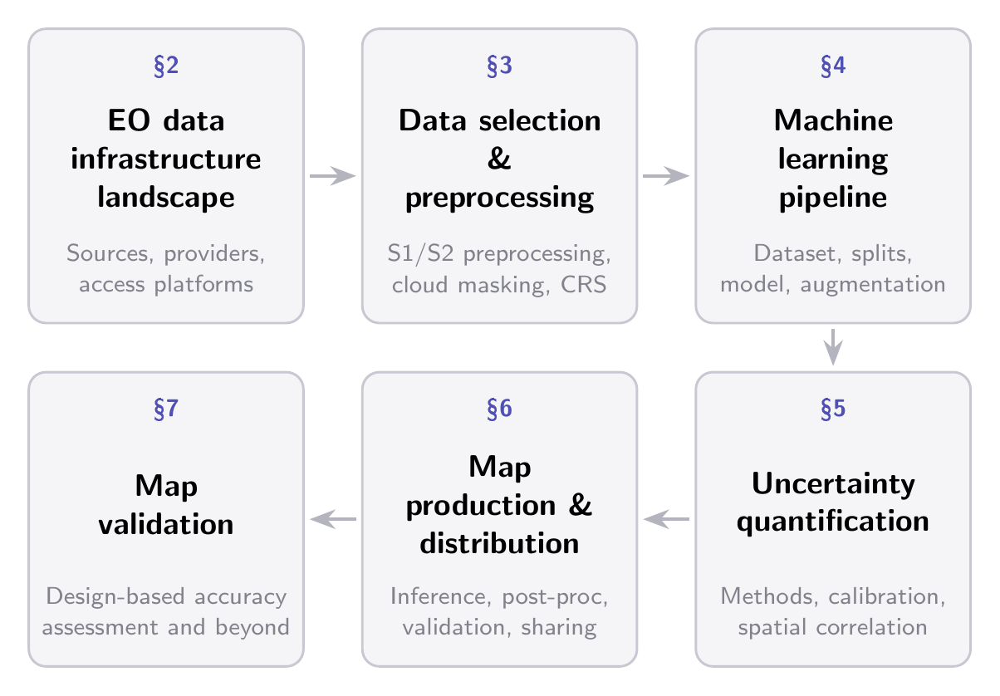

Accessing EO data
In this section, we focus on accessing EO data products. The access landscape has expanded significantly in recent years, but it is also fast-moving and not cleanly delineated: providers and platforms regularly restructure their offerings, pricing, and access policies, and the boundaries between “canonical provider”, “cloud re-distributor”, and “compute platform” are increasingly blurred. A unifying constraint across this landscape is data gravity: modern EO archives have grown to a scale where even freely available data is often impractical to move, and the position of compute relative to data has become a primary design factor. This is the underlying reason most large-scale EO workflows today rely on platforms that co-locate data and compute rather than directly downloading from canonical providers. Figure Figure 7.1 provides an overview of the resulting access landscape.

Canonical EO data providers maintain authoritative archives of specific satellite missions and datasets. The Copernicus Data Space Ecosystem (CDSE) serves as the primary distribution point for Sentinel missions and related European products. The United States Geological Survey (USGS) provides access to Landsat observations. NASA Earthdata hosts MODIS, GEDI, ICESat-2, and other NASA Earth science products. The European Organisation for the Exploitation of Meteorological Satellites (EUMETSAT) distributes data from MSG, MTG, Sentinel-3, Sentinel-6, and related systems. Additional canonical providers include the JAXA Earth Observation Center for ALOS PALSAR, DLR Geoservice for TanDEM-X, and various other agencies maintaining specialized datasets on dedicated platforms.
Re-distribution platforms have emerged to simplify this access, though their roles vary considerably. Google Earth Engine (GEE) [1] is best understood as a compute ecosystem with co-located data rather than a pure data provider. Access is primarily through server-side operations and the platform is highly effective for tasks that exploit this paradigm, including extracting moderate-scale ML training datasets, a common use in the community. However, large-scale data extraction is not what GEE is built for, and users quickly run into export quotas and rate limits. Furthermore, non-commercial quota tiers1 were recently introduced. Microsoft Planetary Computer (MPC), by contrast, is essentially a data access layer: a STAC catalog of cloud-hosted Cloud-Optimized GeoTIFFs (COGs) in Azure Blob Storage, with no built-in server-side processing since the retirement of its free compute environment in mid-20242 Amazon Web Services (AWS) Simple Storage Service (S3) hosts both free buckets (straightforward access) and requester-pays buckets (imposing transfer costs on the user) containing EO data. Additional platforms include Source Cooperative, SentinelHub, Google Cloud Storage public datasets, and CloudFerro3.
| Provider | Host | Online operations | Large-scale egress | Large-scale cloud compute collocation |
|---|---|---|---|---|
| Microsoft Planetary Computer | Azure Blob Storage (Netherlands) | × | ✓ | ✓ |
| Copernicus Data Space Ecosystem | CloudFerro (Poland and Germany) and T Cloud Public (Germany, Netherlands, Switzerland) | ✓ | ✓ | \(\approx\) |
| NASA Earthdata | Amazon S3 (us-west-2) |
× | ✓ | ✓ |
| Source Cooperative | Amazon S3 (us-west-2) |
× | ✓ | ✓ |
| AWS Open Data | Amazon S3 (mostly us-west-2 but varies) |
× | ✓ | ✓ |
| Google Earth Engine | Google Cloud Storage* | ✓ | × | \(\approx\) |
| SentinelHub | Amazon S3 (eu-central-1) |
✓ | × | \(\approx\) |
| USGS | Amazon S3 (us-west-2) |
× | ✓ | ✓ |
| EUMETSAT | Own data centers, Amazon S3 | × | ✓ | \(\approx\) |
| GCS public datasets | Google Cloud Storage (various locations) | × | ✓ | ✓ |
| CloudFerro | Own data centers | × | ✓ | \(\approx\) |
Relying on re-distribution platforms introduces several trade-offs. Since these platforms ingest data from canonical EO providers, there may be latency between acquisition and availability, and their processing pipelines may differ from those of the original providers. As an example, we provide an overview of the processing differences between the native Sentinel-1/2 data products and their GEE equivalents in Sentinel-2 Processing. Data gaps can also occur, as regularly reported by users on the MPC GitHub repository.
Accessing EO data therefore involves practical choices across multiple dimensions. Each platform offers distinct trade-offs in where the data is hosted, support for server-side operations, suitability for large-scale download, and feasibility of running large-scale collocated compute — we summarize them in Table Table 7.1. Most providers have converged on STAC as a catalog standard and the S3 protocol as a download mechanism, but they differ in whether they support online operations such as compositing, in their suitability for large-scale downloads, and in whether the underlying infrastructure can host hyperscaler-class compute alongside the data.
A practical pattern that follows from data gravity is to treat EO data access as a two-stage process. Model development typically involves modest data volumes that can be downloaded comfortably from almost any provider; here, convenience and catalog coverage dominate the choice. Inference at scale, on the other hand, is dominated by data movement: pulling petabyte-scale imagery from one provider into a different compute environment is rarely tractable. As a result, practitioners typically either (i) co-locate inference compute with the data, or (ii) accept the time and storage cost of moving the EO data into their compute environment. In the first case, this means inference at the largest scales is feasible only where the data lives on a hyperscaler (AWS, Azure, or GCP) with large GPU/TPU pools available in the same region, which the rightmost column of Table Table 7.1 reflects. The platform that minimizes friction for training is therefore often not the one that minimizes cost for inference. No universally optimal solution exists: the most appropriate choice depends on the scale of analysis, computational requirements, institutional constraints, and the acceptable trade-off between immediate convenience and the risk of lock-in to proprietary platforms.
The choice of data source and access pathway establishes the starting point of the pipeline. The next section turns to the practical challenges of selecting and processing these satellite observations, to make them suitable for ML workflows and map generation.
https://github.com/microsoft/PlanetaryComputer/discussions/347.↩︎
CloudFerro also acts as a canonical EO data provider, as the CDSE cloud provider.↩︎